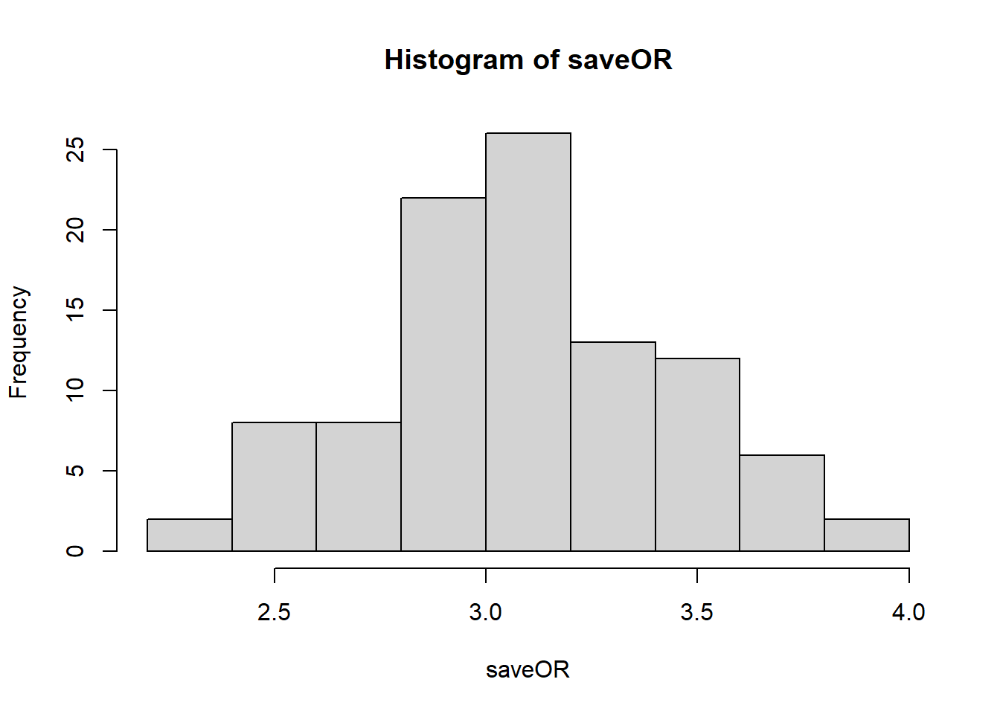

Chapter 3 User-written Function
See J. M. Franklin et al. (2015)
# Plasmode simulation
source("functions/PlasmodeSim.R")
nSim <- 100
simdata <- PlasmodeBinSim(x = rhc,
idVar = "id",
outcomeVar = "death",
treatVar = "swang1",
treatLabel = "",
form = paste0(vars, collapse = "+"),
effectOR = 3,
MM = 1,
nsim = nSim,
size = 3000,
eventRate = 0.65,
exposedPrev = 0.38)## Setup complete. Calling fit## Deviance = 3299.71337102193 Iterations - 1## Deviance = 6096.41310065475 Iterations - 2## Deviance = 6052.40572812184 Iterations - 3## Deviance = 6051.24990537168 Iterations - 4## Deviance = 6051.24785516408 Iterations - 5## Deviance = 6051.24785515008 Iterations - 6## Fit complete. Finishing gam object.
## user.self sys.self elapsed
## initial 0.04 0 0.05
## gam.setup 0.02 0 0.01
## pre-fit 0.00 0 0.00
## fit 0.42 0 0.43
## finalise 0.02 0 0.01
## simulation ID created for iteration 1
## simulation ID created for iteration 2
## simulation ID created for iteration 3
## simulation ID created for iteration 4
## simulation ID created for iteration 5
## simulation ID created for iteration 6
## simulation ID created for iteration 7
## simulation ID created for iteration 8
## simulation ID created for iteration 9
## simulation ID created for iteration 10
## simulation ID created for iteration 11
## simulation ID created for iteration 12
## simulation ID created for iteration 13
## simulation ID created for iteration 14
## simulation ID created for iteration 15
## simulation ID created for iteration 16
## simulation ID created for iteration 17
## simulation ID created for iteration 18
## simulation ID created for iteration 19
## simulation ID created for iteration 20
## simulation ID created for iteration 21
## simulation ID created for iteration 22
## simulation ID created for iteration 23
## simulation ID created for iteration 24
## simulation ID created for iteration 25
## simulation ID created for iteration 26
## simulation ID created for iteration 27
## simulation ID created for iteration 28
## simulation ID created for iteration 29
## simulation ID created for iteration 30
## simulation ID created for iteration 31
## simulation ID created for iteration 32
## simulation ID created for iteration 33
## simulation ID created for iteration 34
## simulation ID created for iteration 35
## simulation ID created for iteration 36
## simulation ID created for iteration 37
## simulation ID created for iteration 38
## simulation ID created for iteration 39
## simulation ID created for iteration 40
## simulation ID created for iteration 41
## simulation ID created for iteration 42
## simulation ID created for iteration 43
## simulation ID created for iteration 44
## simulation ID created for iteration 45
## simulation ID created for iteration 46
## simulation ID created for iteration 47
## simulation ID created for iteration 48
## simulation ID created for iteration 49
## simulation ID created for iteration 50
## simulation ID created for iteration 51
## simulation ID created for iteration 52
## simulation ID created for iteration 53
## simulation ID created for iteration 54
## simulation ID created for iteration 55
## simulation ID created for iteration 56
## simulation ID created for iteration 57
## simulation ID created for iteration 58
## simulation ID created for iteration 59
## simulation ID created for iteration 60
## simulation ID created for iteration 61
## simulation ID created for iteration 62
## simulation ID created for iteration 63
## simulation ID created for iteration 64
## simulation ID created for iteration 65
## simulation ID created for iteration 66
## simulation ID created for iteration 67
## simulation ID created for iteration 68
## simulation ID created for iteration 69
## simulation ID created for iteration 70
## simulation ID created for iteration 71
## simulation ID created for iteration 72
## simulation ID created for iteration 73
## simulation ID created for iteration 74
## simulation ID created for iteration 75
## simulation ID created for iteration 76
## simulation ID created for iteration 77
## simulation ID created for iteration 78
## simulation ID created for iteration 79
## simulation ID created for iteration 80
## simulation ID created for iteration 81
## simulation ID created for iteration 82
## simulation ID created for iteration 83
## simulation ID created for iteration 84
## simulation ID created for iteration 85
## simulation ID created for iteration 86
## simulation ID created for iteration 87
## simulation ID created for iteration 88
## simulation ID created for iteration 89
## simulation ID created for iteration 90
## simulation ID created for iteration 91
## simulation ID created for iteration 92
## simulation ID created for iteration 93
## simulation ID created for iteration 94
## simulation ID created for iteration 95
## simulation ID created for iteration 96
## simulation ID created for iteration 97
## simulation ID created for iteration 98
## simulation ID created for iteration 99
## simulation ID created for iteration 100saveOR <- NULL
for (i in 1:nSim){
plasmodeData.i <- join(data.frame(id=simdata[,i],
EVENT=simdata[,i+nSim]),
rhc, by="id",
type="left")
estORx <- tryCatch(exp(summary(glm(as.formula(paste0("EVENT", "~",
exposure, "+",
paste(vars, collapse = "+"))),
family=binomial(link="logit"),
data=plasmodeData.i))$coef[exposure,"Estimate"]),
error = function(e) { NA } )
saveOR <- c(estORx,saveOR)
cat("iteration", i, "event rate =",
round(table(plasmodeData.i$EVENT)[2]/length(plasmodeData.i$EVENT),2),
"exposure prevalence =",
round(table(plasmodeData.i$swang1)[2]/length(plasmodeData.i$swang1),2),
"OR =", round(estORx,2),
"cumulative mean OR=",
round(mean(saveOR, na.rm = TRUE),2),"\n")
}## iteration 1 event rate = 0.65 exposure prevalence = 0.38 OR = 2.85 cumulative mean OR= 2.85
## iteration 2 event rate = 0.64 exposure prevalence = 0.38 OR = 3.37 cumulative mean OR= 3.11
## iteration 3 event rate = 0.63 exposure prevalence = 0.38 OR = 3.56 cumulative mean OR= 3.26
## iteration 4 event rate = 0.65 exposure prevalence = 0.38 OR = 3.49 cumulative mean OR= 3.32
## iteration 5 event rate = 0.65 exposure prevalence = 0.38 OR = 3.62 cumulative mean OR= 3.38
## iteration 6 event rate = 0.65 exposure prevalence = 0.38 OR = 3.13 cumulative mean OR= 3.34
## iteration 7 event rate = 0.64 exposure prevalence = 0.38 OR = 2.34 cumulative mean OR= 3.2
## iteration 8 event rate = 0.64 exposure prevalence = 0.38 OR = 3.09 cumulative mean OR= 3.18
## iteration 9 event rate = 0.65 exposure prevalence = 0.38 OR = 3.06 cumulative mean OR= 3.17
## iteration 10 event rate = 0.65 exposure prevalence = 0.38 OR = 3.24 cumulative mean OR= 3.18
## iteration 11 event rate = 0.66 exposure prevalence = 0.38 OR = 3.73 cumulative mean OR= 3.23
## iteration 12 event rate = 0.65 exposure prevalence = 0.38 OR = 2.92 cumulative mean OR= 3.2
## iteration 13 event rate = 0.65 exposure prevalence = 0.38 OR = 3.04 cumulative mean OR= 3.19
## iteration 14 event rate = 0.66 exposure prevalence = 0.38 OR = 2.8 cumulative mean OR= 3.16
## iteration 15 event rate = 0.65 exposure prevalence = 0.38 OR = 3.03 cumulative mean OR= 3.15
## iteration 16 event rate = 0.64 exposure prevalence = 0.38 OR = 3.49 cumulative mean OR= 3.17
## iteration 17 event rate = 0.65 exposure prevalence = 0.38 OR = 3.63 cumulative mean OR= 3.2
## iteration 18 event rate = 0.65 exposure prevalence = 0.38 OR = 3.21 cumulative mean OR= 3.2
## iteration 19 event rate = 0.64 exposure prevalence = 0.38 OR = 2.96 cumulative mean OR= 3.19
## iteration 20 event rate = 0.65 exposure prevalence = 0.38 OR = 3.01 cumulative mean OR= 3.18
## iteration 21 event rate = 0.66 exposure prevalence = 0.38 OR = 3.23 cumulative mean OR= 3.18
## iteration 22 event rate = 0.65 exposure prevalence = 0.38 OR = 3.23 cumulative mean OR= 3.18
## iteration 23 event rate = 0.65 exposure prevalence = 0.38 OR = 3.33 cumulative mean OR= 3.19
## iteration 24 event rate = 0.67 exposure prevalence = 0.38 OR = 3.09 cumulative mean OR= 3.19
## iteration 25 event rate = 0.65 exposure prevalence = 0.38 OR = 3.02 cumulative mean OR= 3.18
## iteration 26 event rate = 0.64 exposure prevalence = 0.38 OR = 2.53 cumulative mean OR= 3.15
## iteration 27 event rate = 0.64 exposure prevalence = 0.38 OR = 2.9 cumulative mean OR= 3.14
## iteration 28 event rate = 0.66 exposure prevalence = 0.38 OR = 3.1 cumulative mean OR= 3.14
## iteration 29 event rate = 0.63 exposure prevalence = 0.38 OR = 2.81 cumulative mean OR= 3.13
## iteration 30 event rate = 0.64 exposure prevalence = 0.38 OR = 2.9 cumulative mean OR= 3.12
## iteration 31 event rate = 0.65 exposure prevalence = 0.38 OR = 2.55 cumulative mean OR= 3.11
## iteration 32 event rate = 0.65 exposure prevalence = 0.38 OR = 2.74 cumulative mean OR= 3.09
## iteration 33 event rate = 0.66 exposure prevalence = 0.38 OR = 3.52 cumulative mean OR= 3.11
## iteration 34 event rate = 0.66 exposure prevalence = 0.38 OR = 3.34 cumulative mean OR= 3.11
## iteration 35 event rate = 0.66 exposure prevalence = 0.38 OR = 2.98 cumulative mean OR= 3.11
## iteration 36 event rate = 0.65 exposure prevalence = 0.38 OR = 2.9 cumulative mean OR= 3.1
## iteration 37 event rate = 0.65 exposure prevalence = 0.38 OR = 3.01 cumulative mean OR= 3.1
## iteration 38 event rate = 0.65 exposure prevalence = 0.38 OR = 2.6 cumulative mean OR= 3.09
## iteration 39 event rate = 0.64 exposure prevalence = 0.38 OR = 2.98 cumulative mean OR= 3.09
## iteration 40 event rate = 0.66 exposure prevalence = 0.38 OR = 2.92 cumulative mean OR= 3.08
## iteration 41 event rate = 0.64 exposure prevalence = 0.38 OR = 3.54 cumulative mean OR= 3.09
## iteration 42 event rate = 0.66 exposure prevalence = 0.38 OR = 3.46 cumulative mean OR= 3.1
## iteration 43 event rate = 0.65 exposure prevalence = 0.38 OR = 2.91 cumulative mean OR= 3.1
## iteration 44 event rate = 0.66 exposure prevalence = 0.38 OR = 3.81 cumulative mean OR= 3.11
## iteration 45 event rate = 0.65 exposure prevalence = 0.38 OR = 2.89 cumulative mean OR= 3.11
## iteration 46 event rate = 0.65 exposure prevalence = 0.38 OR = 3.02 cumulative mean OR= 3.11
## iteration 47 event rate = 0.66 exposure prevalence = 0.38 OR = 2.48 cumulative mean OR= 3.09
## iteration 48 event rate = 0.64 exposure prevalence = 0.38 OR = 2.58 cumulative mean OR= 3.08
## iteration 49 event rate = 0.65 exposure prevalence = 0.38 OR = 2.95 cumulative mean OR= 3.08
## iteration 50 event rate = 0.64 exposure prevalence = 0.38 OR = 3.46 cumulative mean OR= 3.09
## iteration 51 event rate = 0.64 exposure prevalence = 0.38 OR = 3.02 cumulative mean OR= 3.09
## iteration 52 event rate = 0.65 exposure prevalence = 0.38 OR = 2.95 cumulative mean OR= 3.08
## iteration 53 event rate = 0.66 exposure prevalence = 0.38 OR = 3.08 cumulative mean OR= 3.08
## iteration 54 event rate = 0.66 exposure prevalence = 0.38 OR = 2.72 cumulative mean OR= 3.08
## iteration 55 event rate = 0.66 exposure prevalence = 0.38 OR = 2.79 cumulative mean OR= 3.07
## iteration 56 event rate = 0.66 exposure prevalence = 0.38 OR = 3.55 cumulative mean OR= 3.08
## iteration 57 event rate = 0.65 exposure prevalence = 0.38 OR = 2.99 cumulative mean OR= 3.08
## iteration 58 event rate = 0.65 exposure prevalence = 0.38 OR = 2.74 cumulative mean OR= 3.07
## iteration 59 event rate = 0.65 exposure prevalence = 0.38 OR = 3.19 cumulative mean OR= 3.07
## iteration 60 event rate = 0.66 exposure prevalence = 0.38 OR = 3.48 cumulative mean OR= 3.08
## iteration 61 event rate = 0.64 exposure prevalence = 0.38 OR = 3.07 cumulative mean OR= 3.08
## iteration 62 event rate = 0.65 exposure prevalence = 0.38 OR = 2.54 cumulative mean OR= 3.07
## iteration 63 event rate = 0.64 exposure prevalence = 0.38 OR = 3.11 cumulative mean OR= 3.07
## iteration 64 event rate = 0.64 exposure prevalence = 0.38 OR = 3.35 cumulative mean OR= 3.08
## iteration 65 event rate = 0.64 exposure prevalence = 0.38 OR = 3.13 cumulative mean OR= 3.08
## iteration 66 event rate = 0.64 exposure prevalence = 0.38 OR = 2.9 cumulative mean OR= 3.08
## iteration 67 event rate = 0.65 exposure prevalence = 0.38 OR = 3.08 cumulative mean OR= 3.08
## iteration 68 event rate = 0.65 exposure prevalence = 0.38 OR = 3.36 cumulative mean OR= 3.08
## iteration 69 event rate = 0.65 exposure prevalence = 0.38 OR = 3.4 cumulative mean OR= 3.08
## iteration 70 event rate = 0.65 exposure prevalence = 0.38 OR = 3.26 cumulative mean OR= 3.09
## iteration 71 event rate = 0.65 exposure prevalence = 0.38 OR = 3.43 cumulative mean OR= 3.09
## iteration 72 event rate = 0.65 exposure prevalence = 0.38 OR = 2.86 cumulative mean OR= 3.09
## iteration 73 event rate = 0.65 exposure prevalence = 0.38 OR = 3.1 cumulative mean OR= 3.09
## iteration 74 event rate = 0.64 exposure prevalence = 0.38 OR = 2.77 cumulative mean OR= 3.08
## iteration 75 event rate = 0.65 exposure prevalence = 0.38 OR = NA cumulative mean OR= 3.08
## iteration 76 event rate = 0.64 exposure prevalence = 0.38 OR = 2.76 cumulative mean OR= 3.08
## iteration 77 event rate = 0.65 exposure prevalence = 0.38 OR = 2.57 cumulative mean OR= 3.07
## iteration 78 event rate = 0.65 exposure prevalence = 0.38 OR = 3.76 cumulative mean OR= 3.08
## iteration 79 event rate = 0.65 exposure prevalence = 0.38 OR = 3.96 cumulative mean OR= 3.09
## iteration 80 event rate = 0.66 exposure prevalence = 0.38 OR = 3.14 cumulative mean OR= 3.09
## iteration 81 event rate = 0.66 exposure prevalence = 0.38 OR = 2.42 cumulative mean OR= 3.09
## iteration 82 event rate = 0.65 exposure prevalence = 0.38 OR = 3.13 cumulative mean OR= 3.09
## iteration 83 event rate = 0.67 exposure prevalence = 0.38 OR = 2.93 cumulative mean OR= 3.08
## iteration 84 event rate = 0.66 exposure prevalence = 0.38 OR = 3.27 cumulative mean OR= 3.09
## iteration 85 event rate = 0.64 exposure prevalence = 0.38 OR = 2.93 cumulative mean OR= 3.08
## iteration 86 event rate = 0.66 exposure prevalence = 0.38 OR = 3.05 cumulative mean OR= 3.08
## iteration 87 event rate = 0.66 exposure prevalence = 0.38 OR = 2.98 cumulative mean OR= 3.08
## iteration 88 event rate = 0.64 exposure prevalence = 0.38 OR = 2.22 cumulative mean OR= 3.07
## iteration 89 event rate = 0.65 exposure prevalence = 0.38 OR = 3.3 cumulative mean OR= 3.08
## iteration 90 event rate = 0.66 exposure prevalence = 0.38 OR = 2.97 cumulative mean OR= 3.07
## iteration 91 event rate = 0.66 exposure prevalence = 0.38 OR = 3.52 cumulative mean OR= 3.08
## iteration 92 event rate = 0.64 exposure prevalence = 0.38 OR = 3.69 cumulative mean OR= 3.09
## iteration 93 event rate = 0.66 exposure prevalence = 0.38 OR = 2.98 cumulative mean OR= 3.09
## iteration 94 event rate = 0.65 exposure prevalence = 0.38 OR = 2.76 cumulative mean OR= 3.08
## iteration 95 event rate = 0.66 exposure prevalence = 0.38 OR = 3 cumulative mean OR= 3.08
## iteration 96 event rate = 0.64 exposure prevalence = 0.38 OR = 3.51 cumulative mean OR= 3.09
## iteration 97 event rate = 0.64 exposure prevalence = 0.38 OR = 3.78 cumulative mean OR= 3.09
## iteration 98 event rate = 0.65 exposure prevalence = 0.38 OR = 3.04 cumulative mean OR= 3.09
## iteration 99 event rate = 0.67 exposure prevalence = 0.38 OR = 3.05 cumulative mean OR= 3.09
## iteration 100 event rate = 0.65 exposure prevalence = 0.38 OR = 3.12 cumulative mean OR= 3.09summary(saveOR)## Min. 1st Qu. Median Mean 3rd Qu. Max. NA's
## 2.223 2.902 3.049 3.092 3.336 3.957 1hist(saveOR)
rm(simdata)References
Franklin, J. M., W. Eddings, R. J. Glynn, and S. Schneeweiss. 2015. “Regularized Regression Versus the High-Dimensional Propensity Score for Confounding Adjustment in Secondary Database Analyses.” American Journal of Epidemiology 182 (7): 651–59.